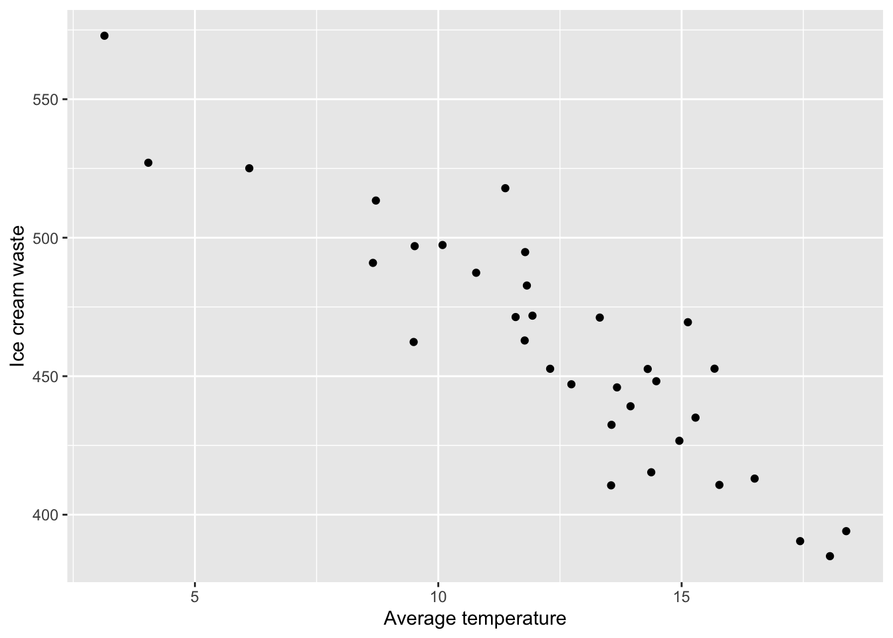
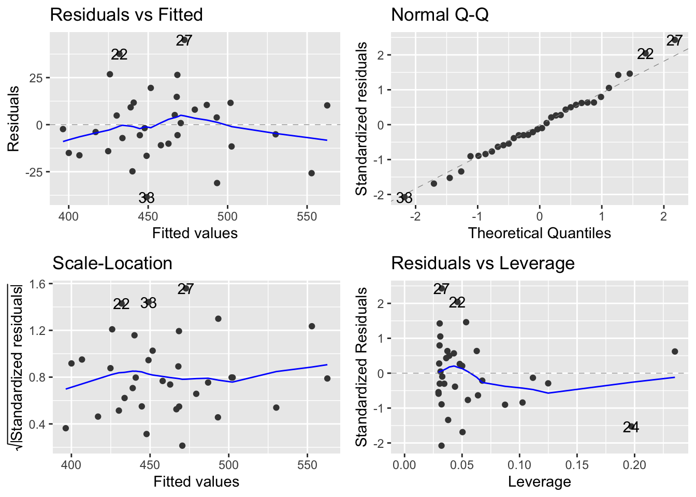

3.2 Generating our data
In order to fit this linear model we need to generate two variables:
- Response variable (\(y\)): \(waste\) and
- Explanatory variable (\(x\)): \(temperature\).
Crucially, these variables need to be associated with each other as shown in the linear model equation.
3.2.1 Explanatory variable
Let’s start by generating our x-variable, \(temperature\). We will use a Normal distribution to do this since our variable is continuous.
The parameters required are defined as follows:
n- the number of samples we wish to draw. In our question \(df=32\), so \(n=34\) (since for a simple linear model \(df=n-2\)).mean- the mean temperature which our data will be centered on. Pick something sensible here, we have gone for \(12^{\circ}\)C.sd- the standard deviation for \(temperature\). Again go for something that seems sensible (high enough to show some variability, but not too high that the values at the extreme are no longer sensible). This can take a bit of trial and error.
Let’s take a look at our simulated data to check that is looks sensible. To do this we will the geom_histogram() function that we used in our previous example.
ggplot(data.frame(temp),aes(x=temp)) +
geom_histogram(color="black",fill="white", bins=10) +
labs(x="Average temperature")
Exercise
Change the values of the mean and sd in the code above and plot a histogram of the newly simulated \(x\) value to see how the data changes.
3.2.2 Using a linear model to generate the response
In order to generate the response variable \(y\) we need to choose a sensible linear model which will relate the explantory variable \(x\) to the response variable \(y\).
To specify a simple linear model we need to choose two values, the intercept, \(\alpha\), and the slope, \(\beta\). In this example we want to estimate ice cream waste from average temperature, we are therefore going to assume there is a negative relationship between these variables, i.e. the warmer it is, the more ice cream you will sell! Therefore, the slope parameter (\(\beta\)) should be negative. The size of this will depend on what you think is a sensible interpretation. Here let’s go for -10.65, so for every unit increase in average temperature, ice cream waste decreases by 10.65kg. For the intercept, again think about a sensible value based on the context. Remember this value is where the regression line will cut the y-axis. Let’s choose 591. The choice for \(\alpha\) and \(\beta\) will be subjective, and might take some trial and error before deciding on your final values. Just make sure that the interpretation of the final model is sensible.
We can now generate the response variable, \(y\) as follows:
where
- 591 is our chosen value for \(\alpha\),
- -10.65 is our chosen value for \(\beta\),
tempis the x-variable we have already simulated.
Let’s now produce a scatterplot of our data using ggplot2. We will use a similar structure to the plots we have produced previously but we will use the geom_point() function to produce a scatterplot as follows:
data<-data.frame(waste=waste, temp=temp)
ggplot(data, aes(x=temp, y=waste)) +
geom_point() +
labs(x="Average temperature", y="Ice cream waste")
To create this scatterplot we first had to store our two variables in a dataframe which we called data. Here we are creating a dataframe with two columns which we have given the same names as the two data vectors we have already created, namely waste and temp. In these columns we are simply storing the data vectors we have simulated above. We then create the scatterplot which works as follows:
- First we specify our data using
ggplot(data). - We then specify the variables we want to plot using the
aes()argument, wherex=tempandy=waste. - We then generate the scatterplot using
geom_point(). Here we have used the default values so we don’t need to specify anything within this function. - Finally, we label our x and y axis using the
labsfunction.
Now, you may have noticed that our scatterplot has identified an issue with the data we have generated. The code we have used has produced a perfect linear relationship between \(temperature\) and \(waste\). This does not seem realistic so we need to add some random noise to \(y\). We can do this by adding some randomly generated values from a normal distribution with mean 0. Think of this as adding residuals to our model.
We always want the model residuals to be centered on 0, so the mean within rnorm() should be 0. The level of variability within \(y\) can be controlled via the standard deviation (sd). Again, this might take some trial and error to get something you are happy with.
Let’s take a look at the scatterplot with our newly generated response.
data<-data.frame(waste=waste, temp=temp)
ggplot(data, aes(x=temp, y=waste)) +
geom_point() +
labs(x="Average temperature", y="Ice cream waste")
That looks better!
Exercise
1. Change the values of \(\alpha\) and \(\beta\) in the code above to see how the relationship between \(x\) and \(y\) changes.
2. Alter the value of sd in the code above to control the level of variation in the \(y\).
3.2.3 Fitting a linear model
Now that we have simulated values for \(temperature\) and \(waste\) we can now fit a linear model and generate output that can be used to create questions.
##
## Call:
## lm(formula = waste ~ temp)
##
## Residuals:
## Min 1Q Median 3Q Max
## -38.514 -11.412 -2.084 10.421 45.052
##
## Coefficients:
## Estimate Std. Error t value Pr(>|t|)
## (Intercept) 596.9391 11.8702 50.29 < 2e-16 ***
## temp -10.9101 0.9153 -11.92 2.62e-13 ***
## ---
## Signif. codes: 0 '***' 0.001 '**' 0.01 '*' 0.05 '.' 0.1 ' ' 1
##
## Residual standard error: 18.85 on 32 degrees of freedom
## Multiple R-squared: 0.8162, Adjusted R-squared: 0.8104
## F-statistic: 142.1 on 1 and 32 DF, p-value: 2.62e-13Note that the estimates for \(\alpha\) and \(\beta\) are slightly different to the values we used to generate the data. This is because of the random noise we added when generating our response variable. The values are fairly similar though. Notice how these values correspond with the linear model used in the question at the top on the page, and how we have used the standard error from the output table when asking for a 95% CI for the slope parameter (although this may be beyond the scope for the AH stats cirriculum).
3.2.4 Adding the linear model line to a scatterplot
We can now add our fitted model and 95% confidence interval to the scatterplot of our data using the following code.
ggplot(data, aes(x=temp, y=waste)) +
geom_point() +
labs(x="Average temperature", y="Ice cream waste")+
geom_smooth(method="lm", se=TRUE)## `geom_smooth()` using formula = 'y ~ x'
To generate this plot we have used the same code as previously and added the geom_smooth() with the following arguments:
method = lm- fit a linear model line to the plot.se = TRUE- display a confidence interval around the line. This can be removed by settingse=FALSE.
3.2.5 Producing model diagnostics
We can use the autoplot() function in the ggfortify library to create diagnostic plots for our linear model using ggplot2 as follows:

3.2.6 Calculating quantities of interest
You can also calculate quantities such as \(S_{xx}, S_{yy}\) and \(S_{xy}\) to be used in questions for calcuating estimates by hand.
S.xx <- sum((temp - mean(temp))^2)
S.yy <- sum((waste - mean(waste))^2)
S.xy <- sum((temp - mean(temp)) * (waste - mean(waste)))
r <- S.xy/(sqrt(S.xx*S.yy))
beta <- S.xy/S.xx
alpha <- mean(waste) - beta*mean(temp)
r## [1] -0.9034156## [1] -10.91007## [1] 596.93913.2.7 Summary
Using R to generate data can be a quick and simple way to create practice questions for students. It can also be helpful to demonstrate certain properties when introducing concepts in class. Another benefit is to allow the creation of multiple variants of the same question, all with slighty different data, and therefore slightly different answers. This can be particularly helpful for revision questions that students can attempt more than once, or in assessments so that all students have slightly different questions/answers.
However, in general we would advise using real data when introducing/demonstrating concepts in class as this allows students to appreciate the use of statistics in real-life scenarios and also allows for discussions around dealing with messy data.